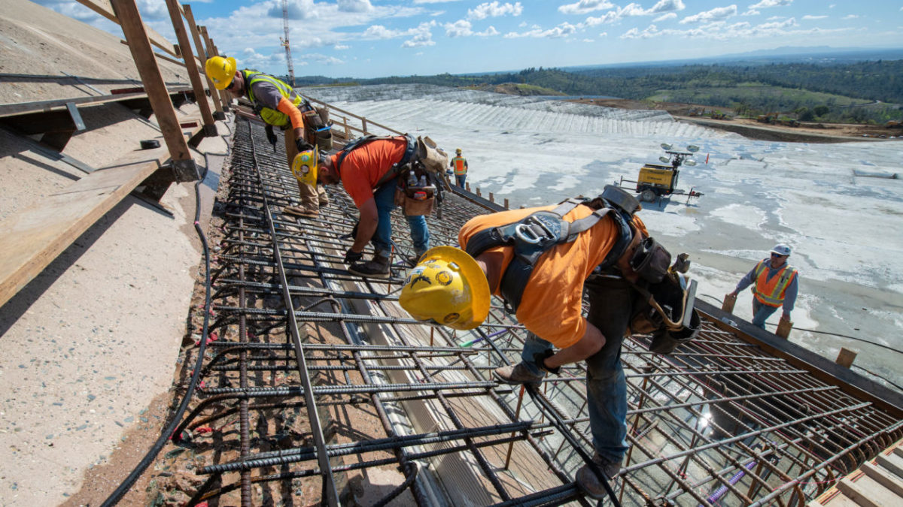

A Multi-Disciplinary Achievement
It is tempting to view the internal combustion engine as purely a mechanical invention — a clever arrangement of pistons and cylinders. In reality, it required a convergence of expertise that crossed the boundaries of what we would today recognize as separate engineering disciplines. Thermodynamics provided the theoretical framework; mechanical engineering supplied the physical components; materials science ensured they could withstand extreme heat and pressure; electrical engineering made reliable ignition possible; manufacturing engineering enabled mass production; and petroleum engineering assured a reliable fuel supply. Each discipline contributed indispensable knowledge. Remove any one of them and the engine, as we know it, could not exist.
The nineteenth century was a period when engineering as a formal profession was only beginning to separate from applied craftsmanship. Many of the ICE's pioneers were self-taught or trained through apprenticeship rather than university study. Yet their work anticipated discoveries that would later be codified into engineering curricula. Nikolaus Otto, for instance, arrived at the four-stroke cycle through relentless experimentation rather than formal thermodynamic analysis, but his results were entirely consistent with the science that Rudolf Clausius and Lord Kelvin were simultaneously developing in the university lecture hall. Practice and theory advanced together, feeding each other in a virtuous cycle of discovery.
Mechanical Engineering
They design turbines that efficiently turn hydraulic energy into electricity. Knowledge in fluid dynamics helps them optimize turbine efficiency as well as ensure that the structure is well enforced integrally. They also help build regulatory systems to prevent catastrophic failure, this includes things like gates that control water flow and pressure regulating systems Through designing parts they have to use precise measurements to ensure their turbines gaps aren't too small or sh ort as any change in clearance between the turbines and its casing can if the gap is too big, allow high pressure fluid through which would reduce energy generation or if the gaps are too small, could cause the tips of the turbine to scrape its casing and destroy the whole structure

Electrical Engineering
They design the generators, transformers, etc. that actually turn turbine energy into electricity and transport it to the grid. They help facilitate the process in creation of automation in the dam. The process of self creating hydro electric power generation and storage without people to constantly oversee it. They also design system energy regulators, ensuring that voltage does not exceed the maximum amount. They also control and go through many simulations ensuring that the connections between electrically conducting parts is seamless and doesn’t leave residual currents. Example: things such as circuit breaks quickly detect problems, and isolate damaged sections to prevent further outage. Circuits also sync with a local power grid and manage frequency so electricity can be safely distributed
Civil Engineering
Planning/Design: They go through meticulous designs and lots of planning/testing to see if a structure is durable for what they want to purpose the dam for. They design ways to also cover the excess in case of a flood or spill they will design reservoirs or spillways They are also required to be extremely careful in construction of the dam as they must comply with regulatory standards, ensure structural integrity as well as create safe ways to discard excess water They also must design the project in a specific area as even part of where it is located can be a reason for failure. Civil engineers assess how prone the regions may be to earthquakes, soil and erosion, or even landslides
Systems Engineering
Develop the systems and integrate multiple parts of other disciplines of engineering to optimize the systems efficiency/design or possibly make the system more resilient to its climate. Dam structures, reservoirs, turbines, generators, etc. They manage all of the previously mentioned systems that are integrated into the dam and are in charge of risk management and optimization. As a systems engineer they are also responsible for the consequences in the event of a catastrophic failure and have to weigh ecosystemic risks, loss of human life, and more. They have to not only weigh these risks but also confide to strict federal regulations and create a dam with coexisting systems that can function as a whole. While they do design more efficient ways to help the system flow its also about systems to prevent failure in one system that may affect others leading to even greater failures.